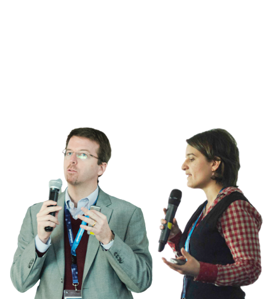
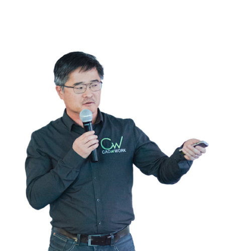
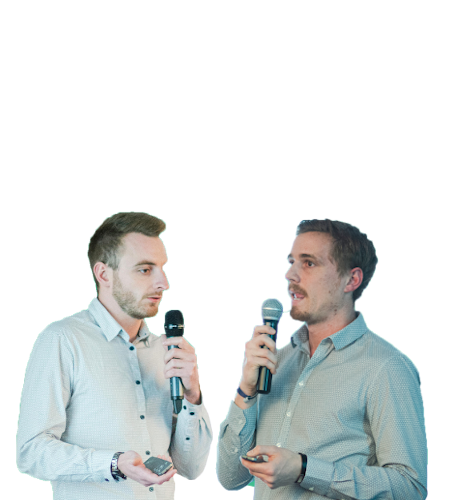
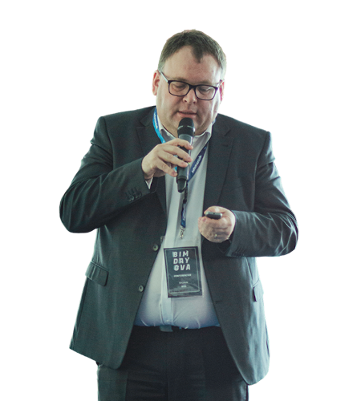
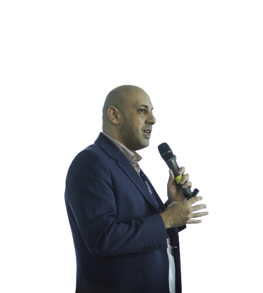

LES ARTICLES/COMPTES RENDUS DE LA 1ERE EDITION
La Digitalisation & Les Innovations
Par Aline Isoz
L'innovation consiste à créer de la valeur pour les clients. Dans un contexte de digitalisation et d'innovation au sein des entreprises, les salariés(...) Lire la suite

Convergences entre le BIM et les systèmes d'informations géographiques
Par Ophélie Vincendon & Pascal Oerhli
Les Systèmes d’Informations Géographiques existent depuis 30 ans, ils fournissent des géo données et des géo informations permettant une(...) Lire la suite

Les enjeux des objets dans un processus BIM
Par Vincent Bleyenheuft
Une maquette numérique est une somme d'objets mais qu'est-ce qu'un objet BIM ? Un objet BIM est un objet géométrique en 2D ou en 3D qui contient(...) Lire la suite
Le BIM au service du Smart Building
Par Emmanuel François et Nicolas Régnier
La SBA, Smart Building Alliance for Smart Cities, est une association qui a pour objectif d'accompagner les acteurs du bâtiment et de la ville(...) Lire la suite
La gestion BIM et CIM des projets à l’échelle urbaine en interface avec les infrastructures
Par Annalisa De Maestri
Le Groupe Valode & Pistre est un groupe pluridisciplinaire au service de la qualité du bâti, il est(...) Lire la suite
Le nouveau rôle de l’architecte
Par Daniel Hurtubise
Les cinq grandes étapes de la réalisation d’un projet architectural sont : l’interprétation des besoins du client, le développement d’une solution,(...) Lire la suite

Coordination et gestion de l’existant en BIM – Projet BLC
Par Antoine Bourlet et Loïc Sauvag
Le projet BLC est un projet de modernisation du centre de traitement des bagages de l’Aéroport de Genève. Le montant du marché(...) Lire la suite

La conduite du changement dans les projets d’infrastructures complexes
Par Sylvain Riss
Le projet du Grand Paris Express est le 3e projet mondial d’infrastructure et le premier projet d’infrastructure européen avec 38 milliards d’euros(...) Lire la suite

Smart City : gestion intelligente des villes
Par Ahmed Riad Sbartaï
Les changements technologiques ayant eu lieu dans l’industrie et l’aéronautique touchent aujourd’hui le monde de la construction. Les pyramides et(...) Lire la suite
La digitalisation, un vecteur de valorisation de votre patrimoine
Par Rodrigo Morales et Romain Du Sordet
Amstein et Walthert est un cabinet pluridisciplinaire d’ingénierie Suisse, fondé en 1927, qui compte 1200 collaborateurs. Le siège social est(...) Lire la suite